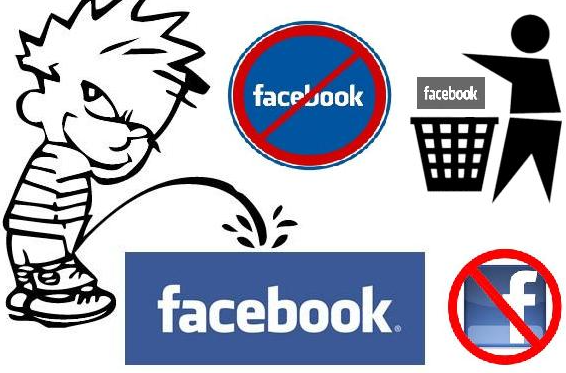
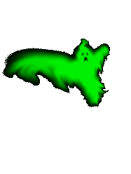
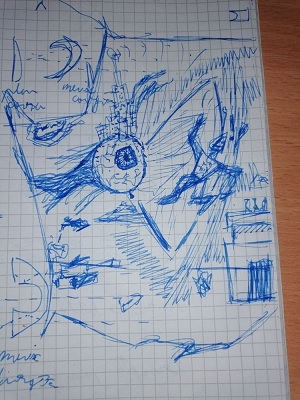
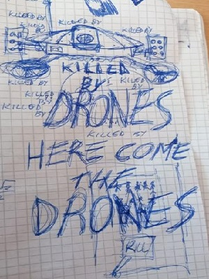

BIO
BIO

 Romanian cunt, I like music and shit, that's about it...
Romanian cunt, I like music and shit, that's about it...

Despite my evergrowing hatred toward social media (especially instagram and twitter), I do have a discord account, if ye wanna chat, feel free to dm me at: Head Priest#3776.
 HOBBIES
HOBBIES

 


 Favourite Media
Favourite Media

 My favourite band is absoluteley Muse, they are the master of space rock and I'm all for it. My favourite albums have to be "Origin of Symmetry" and "Absolution" but they also have bangers on "Black Holes and Revelations" and "The Resistance"
My favourite band is absoluteley Muse, they are the master of space rock and I'm all for it. My favourite albums have to be "Origin of Symmetry" and "Absolution" but they also have bangers on "Black Holes and Revelations" and "The Resistance"
My second favourite is 100% Red Hot Chilly Peppers. I love their energetic music and the basslines are top-shelf quality. Flea is my love. There is songs I love from all of their albums, especially "Blood Sugar Sex Magik"...
 Other than that I mainly listen to all kinds of rock and metal, Aerosmith, The Beatles, Metallica and some other shit.
Other than that I mainly listen to all kinds of rock and metal, Aerosmith, The Beatles, Metallica and some other shit.
I dont't really watch that many movies but my favourite is probably Fight Club and my favourite show is probably Better Call Saul.